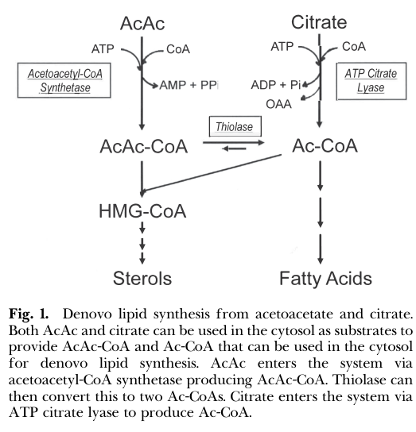

AACS is a cytosolic, ATP-dependent, AMP-forming acetoacetate--CoA ligase that activates acetoacetate with CoA to produce acetoacetyl-CoA, AMP, and diphosphate. This reaction consumes a ketone body and supplies cytosolic acetoacetyl-CoA for cholesterol and fatty-acid biosynthesis, providing an anabolic route for ketone-body carbon that bypasses citrate and ATP-citrate lyase. Human AACS transcripts are abundant in kidney, heart, and brain and low in liver, and human pancreatic islets contain abundant acetoacetyl-CoA synthetase in an acetoacetate-to-cytosolic-acyl-CoA pathway. Direct human evidence establishes cytosolic enzyme activity and expression, and a limited recombinant-human study reports kinetic parameters, whereas detailed reaction stoichiometry, substrate breadth, and quantitative lipid-flux evidence derive chiefly from rat and mouse studies.
| GO Term | Evidence | Action | Reason |
|---|---|---|---|
|
GO:0030729
acetoacetate-CoA ligase activity
|
IBA
GO_REF:0000033 |
ACCEPT |
Summary: The phylogenetic annotation assigns the defining acetoacetate-CoA ligase reaction to human AACS. Human AACS is a close ortholog of experimentally characterized rat Aacs. Human islets contain abundant acetoacetyl-CoA synthetase, and a recent peer-reviewed review reports a limited kinetic study of expressed and purified recombinant human AACS.
Reason: Acetoacetate-CoA ligase activity is the conserved, defining molecular function of AACS. The IBA evidence chain uses the rat donor, but the human cDNA is 89.3% identical to rat Aacs, human islets contain high levels of the enzyme, and recombinant human AACS has reported acetoacetate and CoA kinetic measurements. These orthogonal data make the phylogenetic transfer sound, while the direct human kinetic report still warrants independent replication.
Propagation Review
Root cause:
NO FAILURE CORE
Sources checked:
PANTHER:PTN000644734
· AACS phylogenetic ancestral node
SUPPORTS TRANSFER
The node propagates the family-defining catalytic activity within the conserved AACS ortholog group.
RGD:708522
· rat Aacs (UniProtKB:Q9JMI1)
SUPPORTS TRANSFER
Rat Aacs carries direct experimental catalytic evidence and is the one-to-one mammalian ortholog used for the human transfer.
Supporting Evidence:
PMID:12623130
Amino acid sequence of human AACS deduced from the open reading frame showed high homology (89.3%) with that of rat AACS
PMID:21454710
Human islets possessed high levels of succinyl-CoA:3-ketoacid-CoA transferase, an enzyme that forms acetoacetate in the mitochondria, and acetoacetyl-CoA synthetase, which uses acetoacetate to form acyl-CoAs in the cytosol.
PMID:37356666
Ito et al. (28) measured the Km of the purified rat enzyme to be 8 μM, the Km for AcAc for the expressed and purified human AACS was measured to be 37.6 μM by Aguilo et al. (8), and Bergstrom et al. (3) estimated the Km to be 54 μM in rat liver cytosol.
file:human/AACS/AACS-uniprot.txt
Reaction=acetoacetate + ATP + CoA = acetoacetyl-CoA + AMP + diphosphate
|
|
GO:0032024
positive regulation of insulin secretion
|
IBA
GO_REF:0000033 |
KEEP AS NON CORE |
Summary: Rat INS-1 832/13 knockdown data support a positive contribution of Aacs to glucose-induced insulin release. Human islets contain abundant acetoacetyl-CoA synthetase and may use the same acetoacetate-to-cytosolic-acyl-CoA route, but human AACS itself was not perturbed in the cited human-islet study.
Reason: The IBA transfer is biologically defensible as a beta-cell context-dependent consequence of AACS metabolism, but it is not the enzyme's core evolved function. The causal knockdown evidence is from the rat INS-1 cell line; the human evidence is pathway-level corroboration rather than a direct test that human AACS positively regulates secretion.
Propagation Review
Root cause:
NO FAILURE NON CORE
Sources checked:
PANTHER:PTN002873124
· AACS insulin-secretion phylogenetic node
SUPPORTS TRANSFER
The transfer is coherent for mammalian AACS orthologs but represents a beta-cell physiological context rather than the catalytic core function.
RGD:708522
· rat Aacs (UniProtKB:Q9JMI1)
SUPPORTS TRANSFER
The rat donor has IMP evidence from Aacs knockdown in INS-1 832/13 cells; this is direct for rat but not a direct human perturbation.
Supporting Evidence:
PMID:17724028
However, lowering acetoacetyl-CoA synthetase 80% partially inhibited glucose-induced insulin release indicating formation of SC-CoAs from acetoacetate in the cytosol is important for insulin secretion.
PMID:21454710
This information supports previous data that indicate beta cells can use a pathway involving succinyl-CoA:3-ketoacid-CoA transferase and acetoacetyl-CoA synthetase to synthesize and use acetoacetate and suggests human islets may use this pathway more than PC and citrate to form cytosolic acyl-CoAs.
|
|
GO:0005829
cytosol
|
IEA
GO_REF:0000044 |
ACCEPT |
Summary: The UniProt subcellular-location mapping places AACS in the cytosol, where it activates acetoacetate to acetoacetyl-CoA. The human UniProt statement is by similarity to rat Q9JMI1, and human-islet biochemical data independently describe acetoacetyl-CoA synthetase as using acetoacetate in the cytosol.
Reason: Cytosol is the correct compartment for the core AACS reaction and is supported by both conserved mammalian localization and human-islet evidence. The vocabulary mapping is exact rather than a broad cytoplasm default.
Propagation Review
Root cause:
NO FAILURE CORE
Sources checked:
UniProtKB-SubCell:SL-0091
· cytosol controlled-vocabulary term
SUPPORTS TRANSFER
The vocabulary mapping lands on the exact compartment. The upstream human UniProt statement is rat-inferred, but human-islet and Reactome evidence independently corroborate cytosolic activity.
Supporting Evidence:
PMID:21454710
Human islets possessed high levels of succinyl-CoA:3-ketoacid-CoA transferase, an enzyme that forms acetoacetate in the mitochondria, and acetoacetyl-CoA synthetase, which uses acetoacetate to form acyl-CoAs in the cytosol.
Reactome:R-HSA-5694494
Acetoacetyl-CoA synthetase (AACS) mediates the activation of acetoacetate (ACA) to the KB acetoacetyl-CoA (ACA-CoA) in the cytosol of cells of lipogenic tissues (Aquilo et al. 2010).
|
|
GO:0006629
lipid metabolic process
|
IEA
GO_REF:0000002 |
MODIFY |
Summary: AACS participates in lipid metabolism by supplying cytosolic acetoacetyl-CoA for cholesterol and fatty-acid synthesis. The current parent term loses the experimentally relevant biosynthetic direction of that contribution.
Reason: The annotation is related but too broad: AACS channels ketone-derived carbon into lipogenesis rather than participating generically in both lipid synthesis and breakdown. Replace it with GO:0008610 lipid biosynthetic process, which captures the demonstrated pathway direction without overcommitting to one lipid class.
Propagation Review
Root cause:
TERM SCOPING PROBLEM
Failure modes:
GRANULARITY MISMATCH
Sources checked:
InterPro:IPR005914
· acetoacetyl-CoA synthetase family
SUPPORTS TRANSFER
The family assignment supports the broad lipid-metabolism transfer; direct pathway evidence justifies sharpening the target from generic metabolism to the specifically biosynthetic direction of AACS activity.
Proposed replacements:
lipid biosynthetic process
Supporting Evidence:
Reactome:R-HSA-5694494
AACS is proposed to provide an alternative supply of acetyl units from that of mitochondrial ketogenesis for de novo lipogenesis and cholesterol synthesis in the brain, based on rat experiments (Endemann et al. 1982, review Cotter et al. 2013).
PMID:39471817
AACS LivKO substantially decreased 13C-enrichment into acetyl-CoA and fatty acids (Figures 6E, 6F, S5C, Tables S1, S2, S3).
PMID:22985732
We showed that SREBP-2 regulates the expression of AACS and that knockdown of AACS in vivo, by the hydrodynamics method, resulted in the reduction of total blood cholesterol.
PMID:6501306
[3-14C]Acetoacetate, injected subcutaneously into rats, was rapidly incorporated into hepatic cholesterol and fatty acids. Injection of radiolabeled acetoacetate, acetate, or glucose resulted in the preferential incorporation of acetoacetate into cholesterol.
PMID:7061490
Ketone bodies contribute 19 to 80% of the carbon incorporated into sterols and up to 22% of the carbon incorporated into fatty acids, depending upon the metabolic status of the liver.
|
|
GO:0030729
acetoacetate-CoA ligase activity
|
IEA
GO_REF:0000120 |
ACCEPT |
Summary: The combined IEA maps the AACS-specific InterPro family, RHEA:16117 reaction, and EC 6.2.1.16 to acetoacetate-CoA ligase activity. These sources describe the same reaction: ATP- and CoA-dependent conversion of acetoacetate to acetoacetyl-CoA.
Reason: This is an appropriately specific, mechanistically exact mapping to the defining AACS reaction. Rhea and EC are reaction-vocabulary corroboration rather than independent experimental evidence; human-islet data and the conserved rat ortholog provide the biological support.
Propagation Review
Root cause:
NO FAILURE CORE
Sources checked:
InterPro:IPR005914
· acetoacetyl-CoA synthetase family
SUPPORTS TRANSFER
This is the specific AACS family rather than a generic AMP-binding-enzyme domain mapping.
RHEA:16117
· acetoacetate-CoA ligase reaction
SUPPORTS TRANSFER
The Rhea mapping specifies the exact reaction but is not an independent experimental observation.
EC:6.2.1.16
· acetoacetate-CoA ligase
SUPPORTS TRANSFER
The EC mapping agrees with the specific ligase reaction but is not an independent experimental observation.
Supporting Evidence:
file:human/AACS/AACS-uniprot.txt
Reaction=acetoacetate + ATP + CoA = acetoacetyl-CoA + AMP + diphosphate
Reactome:R-HSA-5694494
Acetoacetyl-CoA synthetase (AACS) mediates the activation of acetoacetate (ACA) to the KB acetoacetyl-CoA (ACA-CoA) in the cytosol of cells of lipogenic tissues (Aquilo et al. 2010).
|
|
GO:0005515
protein binding
|
IPI
PMID:25416956 A proteome-scale map of the human interactome network. |
MARK AS OVER ANNOTATED |
Summary: This IPI annotation represents an AACS-CMTM5 binary interaction reported by a proteome-scale human interactome screen. The interaction may be reproducible, but the generic protein-binding term neither defines the interaction mechanism nor describes AACS catalysis.
Reason: GO:0005515 is an uninformative umbrella term and should not be treated as a core molecular function. The AACS-CMTM5 edge is better retained in the interaction database until a specific biochemical role or complex context is established.
Supporting Evidence:
PMID:25416956
Here, we describe a systematic map of ?14,000 high-quality human binary protein-protein interactions.
file:human/AACS/AACS-uniprot.txt
Q86V21; Q96DZ9: CMTM5; NbExp=3; IntAct=EBI-10259474, EBI-2548702;
|
|
GO:0046951
ketone body biosynthetic process
|
TAS
Reactome:R-HSA-77111 |
MODIFY |
Summary: Reactome:R-HSA-77111 is a mitochondrial hepatic ketone-body-synthesis pathway that contains the AACS reaction, but propagating the parent pathway term to AACS reverses the reaction's local direction: AACS consumes the ketone body acetoacetate in the cytosol to form acetoacetyl-CoA for downstream metabolism.
Reason: This is a pathway-polarity error, not merely an overly broad term. AACS is a ketone-body-utilizing enzyme and does not synthesize ketone bodies. Replace GO:0046951 with GO:0046952 ketone body catabolic process to reflect consumption of acetoacetate.
Propagation Review
Root cause:
PROPAGATION BAD
Failure modes:
ROLE CONFLATION
COMPARTMENT OR COMPLEX MISMATCH
Sources checked:
Reactome:R-HSA-77111
· Synthesis of Ketone Bodies
SUPPORTS SOURCE BUT NOT TARGET
The pathway correctly describes mitochondrial ketogenesis, but assigning its biosynthetic process term to cytosolic AACS reverses the role of the AACS reaction, which consumes acetoacetate.
Proposed replacements:
ketone body catabolic process
Supporting Evidence:
Reactome:R-HSA-77111
Ketone body synthesis proceeds via the synthesis of ccetoacetic acid in three steps from acetyl CoA, followed by the reduction of acetoacetic acid to beta-hydroxybutyrate. In the body, these reactions occur in the mitochondria of liver cells (Sass 2011).
Reactome:R-HSA-5694494
Acetoacetyl-CoA synthetase (AACS) mediates the activation of acetoacetate (ACA) to the KB acetoacetyl-CoA (ACA-CoA) in the cytosol of cells of lipogenic tissues (Aquilo et al. 2010).
|
|
GO:0030729
acetoacetate-CoA ligase activity
|
TAS
Reactome:R-HSA-5694494 |
ACCEPT |
Summary: The human Reactome event states that AACS ligates CoA to acetoacetate to form acetoacetyl-CoA in the cytosol, which is precisely GO:0030729.
Reason: The event is reaction-specific and matches the defining AACS molecular function. Reactome explicitly notes that its physiological proposal is based substantially on rat experiments, while human cDNA, human-islet enzyme evidence, and a limited recombinant-human kinetic report corroborate the human assignment.
Supporting Evidence:
Reactome:R-HSA-5694494
Acetoacetyl-CoA synthetase (AACS) mediates the activation of acetoacetate (ACA) to the KB acetoacetyl-CoA (ACA-CoA) in the cytosol of cells of lipogenic tissues (Aquilo et al. 2010).
PMID:21454710
Human islets possessed high levels of succinyl-CoA:3-ketoacid-CoA transferase, an enzyme that forms acetoacetate in the mitochondria, and acetoacetyl-CoA synthetase, which uses acetoacetate to form acyl-CoAs in the cytosol.
PMID:37356666
The Km for CoASH was measured to be 10 μM (28) for the enzyme purified from rat liver and 2.3 μM for the recombinant human AACS (8).
|
|
GO:0030729
acetoacetate-CoA ligase activity
|
ISS
GO_REF:0000024 |
ACCEPT |
Summary: This ISS annotation transfers acetoacetate-CoA ligase activity from the experimentally characterized rat ortholog Q9JMI1 to human AACS.
Reason: Rat Q9JMI1 has direct catalytic and cytosolic-localization evidence, and the transfer is strengthened by 89.3% human-rat sequence identity, membership in the same specific AACS subfamily, detection of acetoacetyl-CoA synthetase in human islets, and a limited recombinant-human kinetic report. The GOA evidence path remains an ISS transfer even though direct human catalysis provides external corroboration.
Propagation Review
Root cause:
NO FAILURE CORE
Sources checked:
UniProtKB:Q9JMI1
· rat Aacs
SUPPORTS TRANSFER
The one-to-one rat ortholog supplies the ISS evidence path for the exact reaction; the limited recombinant-human kinetic report independently corroborates the transferred activity.
Supporting Evidence:
PMID:12623130
Amino acid sequence of human AACS deduced from the open reading frame showed high homology (89.3%) with that of rat AACS
file:human/AACS/AACS-uniprot.txt
Evidence={ECO:0000250|UniProtKB:Q9JMI1};
PMID:37356666
Ito et al. (28) measured the Km of the purified rat enzyme to be 8 μM, the Km for AcAc for the expressed and purified human AACS was measured to be 37.6 μM by Aguilo et al. (8), and Bergstrom et al. (3) estimated the Km to be 54 μM in rat liver cytosol.
|
|
GO:0005829
cytosol
|
TAS
Reactome:R-HSA-5694494 |
ACCEPT |
Summary: The Reactome reaction is explicitly cytosolic, consistent with AACS activation of acetoacetate outside mitochondria and with human-islet biochemical evidence.
Reason: Cytosol is the correct location for the core AACS reaction. Reactome's detailed mechanistic model relies substantially on rat work rather than direct human localization microscopy, but the compartment is independently described in the human-islet study and is conserved across mammalian AACS.
Supporting Evidence:
Reactome:R-HSA-5694494
Acetoacetyl-CoA synthetase (AACS) mediates the activation of acetoacetate (ACA) to the KB acetoacetyl-CoA (ACA-CoA) in the cytosol of cells of lipogenic tissues (Aquilo et al. 2010).
PMID:21454710
Human islets possessed high levels of succinyl-CoA:3-ketoacid-CoA transferase, an enzyme that forms acetoacetate in the mitochondria, and acetoacetyl-CoA synthetase, which uses acetoacetate to form acyl-CoAs in the cytosol.
|
Q: Can the published recombinant-human AACS kinetic values, including the reported ATP Km, be independently reproduced and extended to define substrate range, cation requirements, reaction stoichiometry, and the catalytic competence of each annotated splice isoform?
Q: In which native human tissues and nutritional states does AACS make a quantitatively important contribution to cholesterol or fatty-acid synthesis relative to the citrate--ATP-citrate-lyase route?
Q: Does endogenous AACS causally support glucose-stimulated insulin secretion in human beta cells, or is the phenotype seen in rat INS-1 cells species- or model-specific?
Experiment: Purify the canonical Q86V21 product, each annotated alternative isoform, and an active-site mutant; measure AMP, diphosphate, and acetoacetyl-CoA formation across defined acetoacetate, CoA, ATP, and cation concentrations, and confirm products by targeted mass spectrometry.
Hypothesis: Full-length human AACS reproduces the reported acetoacetate-CoA ligase activity and kinetics, whereas one or more truncated splice isoforms have reduced activity.
Type: recombinant enzymology and isoform comparison
Experiment: Perform CRISPR knockout and wild-type versus catalytic-dead rescue in human neural and adipocyte models with confirmed endogenous AACS, using hepatocytes as a low-expression comparator. Trace labeled acetoacetate into acetoacetyl-CoA, HMG-CoA, cholesterol, and fatty acids, and compare flux with and without ATP-citrate-lyase inhibition.
Hypothesis: AACS supplies a measurable fraction of cytosolic acetoacetyl-CoA and downstream sterol and fatty-acid carbon in lipogenic human cells.
Type: genetic rescue and stable-isotope metabolomics
Experiment: Perturb AACS in primary human islets or stem-cell-derived beta cells using CRISPRi, rescue with wild-type or catalytic-dead Q86V21, and quantify acetoacetyl-CoA pools, stimulus-coupled insulin secretion, viability, and mitochondrial versus cytosolic carbon flux.
Hypothesis: Human beta-cell AACS contributes directly to glucose-stimulated insulin secretion by supplying cytosolic short-chain acyl-CoAs.
Type: human beta-cell perturbation and metabolic flux analysis
The research report should be a detailed narrative explaining the function, biological processes, and localization of the gene product. Citations should be given for all claims.
You should prioritize authoritative reviews and primary scientific literature when conducting research. You can supplement
this with annotations you find in gene/protein databases, but these can be outdated or inaccurate.
We are specifically interested in the primary function of the gene - for enzymes, what reaction is catalyzed, and what is the substrate specificity? For transporters, what is the substrate? For structural proteins or adapters, what is the broader structural role? For signaling molecules, what is the role in the pathway.
We are interested in where in or outside the cell the gene product carries out its function.
We are also interested in the signaling or biochemical pathways in which the gene functions. We are less interested in broad pleiotropic effects, except where these elucidate the precise role.
Include evidence where possible. We are interested in both experimental evidence as well as inference from structure, evolution, or bioinformatic analysis. Precise studies should be prioritized over high-throughput, where available.
Human AACS encodes acetoacetyl-CoA synthetase (also called ACSF1), a cytosolic, ATP-dependent, AMP-forming acyl-CoA ligase. Its principal function is to activate the ketone body acetoacetate for anabolic metabolism:
acetoacetate + CoA + ATP → acetoacetyl-CoA + AMP + pyrophosphate (PPi).
The resulting cytosolic acetoacetyl-CoA can enter cholesterol synthesis directly through cytosolic HMG-CoA synthase or be cleaved by cytosolic thiolase to acetyl-CoA for fatty-acid synthesis, elongation, and other lipid synthesis. Thus, AACS is not primarily a mitochondrial ketone-oxidation enzyme; it is an anabolic ketone-body-utilization enzyme that provides a cytosolic route into lipogenesis while bypassing citrate and ATP-citrate lyase (ACLY) (bergstrom2023thelipogenicenzyme pages 1-2, bergstrom2023thelipogenicenzyme media 16de3062).
The strongest direct human evidence comprises recombinant-enzyme kinetics and metabolic-flux studies in human fibroblasts. Much of the developmental, nutritional, and regulatory physiology comes from rodents and should not be treated as proven human physiology. The most important recent synthesis is Bergstrom’s peer-reviewed Journal of Lipid Research review, published August 2023, while a 2024-origin preprint proposes an additional role in supplying acetoacetyl-CoA for lysine acetoacetylation (bergstrom2023thelipogenicenzyme pages 2-3, fu2025identificationofthe pages 12-14).
The requested target is internally consistent:
Open Targets independently maps human AACS/ENSG00000081760 to the approved name “acetoacetyl-CoA synthetase,” agreeing with the supplied UniProt identity (OpenTargets Search: -AACS). No evidence retrieved indicated that the human symbol referred to a different protein.
The supplied domains—Acac_CoA_synth, ACAS_N, AMP-binding catalytic-signature, and AMP-dependent synthetase/ligase domains—are consistent with the experimentally established ATP-to-AMP ligase reaction. AACS belongs to the adenylate-forming/AMP-binding enzyme superfamily rather than to the mitochondrial thiolases or succinyl-CoA:3-oxoacid CoA transferase used in oxidative ketolysis. However, the retrieved literature did not provide a modern experimentally determined human AACS structure, so precise residue-level catalytic assignments remain predominantly domain-based inference.
AACS couples acetoacetate to free CoA while converting ATP to AMP and PPi. This ATP-to-AMP stoichiometry is characteristic of adenylate-forming acyl-CoA ligases and is directly compatible with the AMP-binding domains annotated in Q86V21 (bergstrom2023thelipogenicenzyme pages 1-2).
The likely family-level mechanism is a two-stage adenylation process: acetoacetate is first activated as an acetoacetyl-adenylate, followed by CoA attack to form the thioester acetoacetyl-CoA. That mechanistic sequence is strongly inferred from the enzyme family and reaction products, but the retrieved evidence did not include direct transient-intermediate or human structural analysis; it should therefore be distinguished from the experimentally established net reaction.
For expressed and purified human AACS, the reported Michaelis constants are:
These values identify AACS as a high-affinity acetoacetate-utilizing enzyme. The 2023 expert review notes that circulating acetoacetate is normally sufficient to support this pathway even outside overt ketosis; accordingly, pathway flux is expected to depend substantially on enzyme abundance and regulation, rather than simply on substrate availability (bergstrom2023thelipogenicenzyme pages 12-13, bergstrom2023thelipogenicenzyme pages 2-3).
Acetoacetate is the preferred substrate. L-(+)-3-hydroxybutyrate was reported to support approximately 20–50% of the activity measured with acetoacetate, but this estimate was synthesized from older mixed rat/human studies and is less secure as a specifically human kinetic annotation (bergstrom2023thelipogenicenzyme pages 2-3). AACS should therefore be annotated primarily as an acetoacetate:CoA ligase, not as a broad fatty-acid activating enzyme or a general β-hydroxybutyrate ligase.
The consensus localization is the cytosol. This placement is functionally essential: AACS makes cytosolic acetoacetyl-CoA available directly to anabolic lipid pathways. It is therefore spatially and metabolically distinct from mitochondrial ketone-body oxidation through OXCT1/SCOT and mitochondrial thiolase (bergstrom2023thelipogenicenzyme pages 1-2).
The pathway comparison in the 2023 review shows two cytosolic entry routes into lipogenesis: AACS converts acetoacetate to acetoacetyl-CoA, whereas ACLY converts citrate to acetyl-CoA. AACS-derived acetoacetyl-CoA can either enter the sterol branch or interconvert with acetyl-CoA through thiolase (bergstrom2023thelipogenicenzyme media 16de3062).
AACS-derived acetoacetyl-CoA can condense with acetyl-CoA through cytosolic HMG-CoA synthase, producing HMG-CoA for the mevalonate/cholesterol pathway. Isotope studies summarized in the recent review indicate that acetoacetate can enter HMG-CoA as an intact four-carbon unit. This is kinetically plausible because cytosolic HMG-CoA synthase has high affinity for acetoacetyl-CoA—reported Km below 2 µM—whereas cytosolic thiolase has a lower affinity, approximately 50 µM, favoring direct channeling toward sterols under some conditions (bergstrom2023thelipogenicenzyme pages 11-12).
Alternatively, cytosolic thiolase cleaves acetoacetyl-CoA into two acetyl-CoA molecules. These can support fatty-acid synthesis, fatty-acid elongation, and synthesis of other cellular lipids. This route allows ketone-body carbon to enter lipogenesis without first passing through mitochondrial citrate export and ACLY (bergstrom2023thelipogenicenzyme pages 1-2, bergstrom2023thelipogenicenzyme media 16de3062).
Cultured human diploid fibroblasts provide the clearest human-cell flux evidence. Acetoacetate supplied lipid synthesis 2–8 times more effectively than glucose, glutamine, lactate, or pyruvate. For sterol synthesis specifically, acetoacetate was 7.7-fold more effective than glucose. Apparent Km values for acetoacetate incorporation were approximately 30 µM for sterols and 185 µM for fatty acids (bergstrom2023thelipogenicenzyme pages 8-9, bergstrom2023thelipogenicenzyme pages 9-11).
Hydroxycitrate, an ACLY-pathway inhibitor, blocked pyruvate-derived lipid labeling by approximately 99% but did not block acetoacetate-derived labeling. This supports an extra-mitochondrial, ACLY-independent pathway consistent with AACS activity, although those older experiments did not use contemporary AACS knockout/rescue designs (bergstrom2023thelipogenicenzyme pages 8-9).
Human-brain expression was reported in the literature, and a 2023 acyl-CoA synthetase review describes relatively high AACS expression in kidney, heart, and brain. The primary human-brain paper was not available in full in the retrieved corpus, so exact cell-type and protein-localization claims should be regarded as moderate-confidence rather than definitive (OpenTargets Search: -AACS).
Rodent work places AACS most prominently in lipogenic settings: developing brain, adult liver, adipose tissue, and lactating mammary gland. Activity follows developmental or physiological demand for lipid synthesis—for example, high activity during brain myelination and lactation (bergstrom2023thelipogenicenzyme pages 1-2). These observations provide compelling conserved-function hypotheses, but quantitative tissue rankings from rodents should not be copied directly into a human annotation.
In suckling-rat brain homogenates, acetoacetate supported lipid synthesis at rates 7–11 times those observed with glucose. In mixed oligodendrocyte/astrocyte cultures, acetoacetate was approximately 5–10 times better than glucose as a lipogenic precursor. Regional incorporation tracked active myelination, and neuronal-development experiments concluded that AACS was required for normal neuronal differentiation/development (bergstrom2023thelipogenicenzyme pages 5-6, bergstrom2023thelipogenicenzyme pages 7-8). These data support a mechanistic model in which AACS supplies sterol and fatty-acid precursors for developing neural membranes and myelin, but direct confirmation in human neural development remains limited.
AACS appears to be regulated principally at the level of expression and enzyme activity.
Cholesterol-responsive regulation. Mouse studies identify SREBP-2 interaction with the Aacs promoter and coordinated regulation with cholesterol-synthesis enzymes. Mouse Aacs knockdown reduced total serum cholesterol by 28%, supporting a causal contribution to cholesterol homeostasis (bergstrom2023thelipogenicenzyme pages 3-5).
Large nutritional responses. In rat liver, dietary cholesterol suppressed AACS activity by approximately 85%. Cholestyramine, lovastatin, or their combination increased activity, with a 44-fold difference between cholesterol-fed animals and animals receiving cholestyramine plus lovastatin. AACS also displayed approximately 10-fold diurnal variation in rat liver (bergstrom2023thelipogenicenzyme pages 2-3). These are substantial effects, but they are rodent data rather than established human regulatory amplitudes.
Adipogenesis. Rodent/3T3-L1 studies implicate C/EBPα and PPARγ-responsive promoter elements and show that Aacs expression rises during adipocyte differentiation. Knockdown impaired differentiation and lipogenesis, placing the enzyme in an adipogenic lipid-supply program (bergstrom2023thelipogenicenzyme pages 3-5).
Acyl-CoA feedback. Purified rat-liver AACS is noncompetitively inhibited by fatty acyl-CoAs: reported Ki values include 9.8 µM for palmitoyl-CoA, 17 µM for octanoyl-CoA, 30 µM for hexanoyl-CoA, and approximately 190 µM for butyryl-CoA. This suggests feedback by cellular acyl-CoA status, but equivalent inhibition constants have not been established for recombinant human Q86V21 (bergstrom2023thelipogenicenzyme pages 3-5).
The most authoritative recent analysis is Bergstrom’s August 2023 Journal of Lipid Research review, “The lipogenic enzyme acetoacetyl-CoA synthetase and ketone body utilization for de novo lipid synthesis” (DOI: https://doi.org/10.1016/j.jlr.2023.100407). Its central expert interpretation is that AACS is a high-affinity, highly regulated cytosolic lipogenic enzyme and that ketone bodies should be considered anabolic carbon substrates—not solely oxidative fuels. The author further proposes “lipid interconversion”: hepatic fatty-acid carbon is converted to circulating ketone bodies and subsequently reused through AACS to synthesize cholesterol and other lipids in liver or peripheral tissues (bergstrom2023thelipogenicenzyme pages 12-13, bergstrom2023thelipogenicenzyme pages 1-2).
A bioRxiv study first posted from work dated October 2024 proposes a new regulatory role: AACS supplies acetoacetyl-CoA for lysine acetoacetylation, including histone modification. AACS overexpression increased histone acetoacetylation in HEK293T cells, but not significantly in HepG2 cells, indicating strong cell-context dependence. The broader proteomics analysis identified 139 acetoacetylated sites on 85 human proteins. This is potentially important because it links ketone metabolism to chromatin and protein regulation, but it remains emerging, non-peer-reviewed evidence and should not yet replace the canonical lipogenic annotation (fu2025identificationofthe pages 12-14).
AACS presently has no established clinical diagnostic, approved drug-target, or therapeutic implementation. The clinical-trial search retrieved no relevant AACS-targeted interventional studies. Open Targets lists low-to-moderate computational or genetic associations with traits including alcohol drinking, hearing-loss disorders, skin disorders, allergic rhinitis, and neurodegenerative disease, but these associations do not demonstrate that AACS is causal, druggable, or clinically actionable (OpenTargets Search: -AACS).
The most plausible research applications are:
The 2023 review specifically cautions that AACS may provide an alternative source of lipogenic carbon when ACLY is pharmacologically inhibited. That possibility is mechanistically credible but has not yet been established as clinical resistance to ACLY inhibitors (bergstrom2023thelipogenicenzyme pages 1-2, bergstrom2023thelipogenicenzyme pages 2-3).
| feature | best-supported annotation | evidence/species | confidence |
|---|---|---|---|
| Identity and aliases | Human AACS corresponds to acetoacetyl-CoA synthetase; approved target name in Open Targets is acetoacetyl-CoA synthetase; literature and user-supplied UniProt context align with alias ACSF1 and enzyme class EC 6.2.1.16 (OpenTargets Search: -AACS, bergstrom2023thelipogenicenzyme pages 1-2) | Direct human target identity from Open Targets; enzyme naming and function supported by review synthesizing primary AACS literature; family placement as AMP-forming ACS also supported by ACS-family review (human-focused family overview) (OpenTargets Search: -AACS, bergstrom2023thelipogenicenzyme pages 1-2) | High |
| Primary reaction | AcAc + CoA + ATP → acetoacetyl-CoA + AMP + PPi; AACS activates acetoacetate for anabolic lipid synthesis (bergstrom2023thelipogenicenzyme pages 1-2) | Review of AACS primary biochemistry, based on prior purification/expression work; applies to human ortholog and directly matches UniProt annotation (bergstrom2023thelipogenicenzyme pages 1-2) | High |
| Subcellular localization | Best-supported localization is cytosolic; AACS provides cytosolic acetoacetyl-CoA for lipid synthesis, bypassing citrate/ACLY entry into lipogenesis (bergstrom2023thelipogenicenzyme pages 1-2, bergstrom2023thelipogenicenzyme media 16de3062) | Strong literature consensus; pathway figure explicitly contrasts cytosolic AACS branch with ACLY branch; largely from rodent and general mammalian studies, but used to interpret human ortholog function (bergstrom2023thelipogenicenzyme pages 1-2, bergstrom2023thelipogenicenzyme media 16de3062) | High |
| Enzyme family / catalytic type | ATP-dependent AMP-forming acyl-CoA ligase within the ACS/AMP-binding enzyme superfamily; functionally distinct in using acetoacetate rather than long-chain fatty acids (OpenTargets Search: -AACS, bergstrom2023thelipogenicenzyme pages 1-2) | Family-level evidence from ACS reviews and AACS biochemistry; domain-level match is consistent with supplied UniProt record but not directly resolved from retrieved primary structural paper text (OpenTargets Search: -AACS, bergstrom2023thelipogenicenzyme pages 1-2) | Moderate |
| Human recombinant kinetics | Recombinant human AACS: Km(AcAc) = 37.6 µM; Km(CoASH) = 2.3 µM; CoASH substrate inhibition above 15 µM (bergstrom2023thelipogenicenzyme pages 2-3) | Direct human biochemical evidence summarized from expressed/purified human enzyme in 2023 review; contrasted there with rat values (bergstrom2023thelipogenicenzyme pages 2-3) | High |
| Alternate substrate activity | L(+)-3-hydroxybutyrate can serve as substrate at about 20–50% of the AcAc rate; evidence summarized in review from rat and human enzyme studies, but substrate preference remains clearly highest for acetoacetate (bergstrom2023thelipogenicenzyme pages 2-3) | Mixed-species biochemical evidence summarized in review; not as direct or as well quantified for human as AcAc kinetics (bergstrom2023thelipogenicenzyme pages 2-3) | Moderate |
| Immediate metabolic product fate | Cytosolic acetoacetyl-CoA can be used directly by cytosolic HMG-CoA synthase to support cholesterol synthesis, or cleaved by cytosolic acetoacetyl-CoA thiolase to yield acetyl-CoA for fatty-acid synthesis, elongation, and other lipid synthesis (bergstrom2023thelipogenicenzyme pages 1-2, bergstrom2023thelipogenicenzyme pages 11-12, bergstrom2023thelipogenicenzyme media 16de3062) | Strong pathway-level support from review and figure; direct channeling evidence comes mainly from rodent/cell studies, but pathway logic is broadly conserved (bergstrom2023thelipogenicenzyme pages 1-2, bergstrom2023thelipogenicenzyme pages 11-12, bergstrom2023thelipogenicenzyme media 16de3062) | High |
| Human cell evidence for anabolic function | In human diploid fibroblasts, AcAc was a better substrate for lipid synthesis than glucose, glutamine, lactate, or pyruvate by 2- to 8-fold; for sterol synthesis, AcAc was 7.7-fold better than glucose; apparent Km for AcAc incorporation was 30 µM for sterols and 185 µM for fatty acids; hydroxycitrate blocked pyruvate-to-lipid but not AcAc-to-lipid flux, supporting an AACS-mediated extra-mitochondrial route (bergstrom2023thelipogenicenzyme pages 8-9, bergstrom2023thelipogenicenzyme pages 9-11) | Direct human cell metabolic evidence, though from fibroblasts rather than purified AACS-specific perturbation in modern systems (bergstrom2023thelipogenicenzyme pages 8-9, bergstrom2023thelipogenicenzyme pages 9-11) | High |
| Human tissue expression/local context | Literature cited in later reviews reports human brain expression of AACS; 2023 ACS-family review states relatively high expression in kidney, heart, and brain (OpenTargets Search: -AACS) | Human expression claim is secondary-review level in retrieved evidence; original 2003 human brain primary paper was referenced but not directly retrieved in full text here (OpenTargets Search: -AACS) | Moderate |
| Developmental role | AACS is reported as essential for normal neuronal development; broader developmental literature places high AACS activity during myelination and links ketone-body-derived lipids to neural development (bergstrom2023thelipogenicenzyme pages 1-2) | Strong biological implication from cited primary study, but retrieved direct text was limited; much mechanistic support is rodent developmental evidence (bergstrom2023thelipogenicenzyme pages 1-2) | Moderate |
| Rodent developmental physiology | In suckling rodents, ketone bodies are major lipogenic substrates in brain, spinal cord, skin, and lung; AcAc often exceeds glucose for lipid synthesis by 5–11-fold depending on model, and AACS activity tracks periods of active myelination/lipogenesis (bergstrom2023thelipogenicenzyme pages 5-6, bergstrom2023thelipogenicenzyme pages 7-8) | Rodent-only inference for developmental context; highly relevant to conserved function but not direct human proof (bergstrom2023thelipogenicenzyme pages 5-6, bergstrom2023thelipogenicenzyme pages 7-8) | Moderate |
| Cholesterol-homeostasis regulation | In liver-related models, AACS is regulated alongside cholesterol-synthesis genes; promoter interaction with SREBP-2 is reported, and mouse Aacs knockdown lowered total serum cholesterol by 28%; dietary/statin/cholestyramine manipulations altered hepatic AACS activity over a wide dynamic range (up to 44-fold across conditions in rats) (bergstrom2023thelipogenicenzyme pages 3-5, bergstrom2023thelipogenicenzyme pages 2-3) | Mostly rodent and mouse evidence; useful for pathway placement and regulatory inference, but not direct human causal evidence (bergstrom2023thelipogenicenzyme pages 3-5, bergstrom2023thelipogenicenzyme pages 2-3) | Moderate |
| Feedback / metabolic regulation | Long-chain acyl-CoAs can inhibit AACS noncompetitively in rat liver (e.g., palmitoyl-CoA Ki 9.8 µM, octanoyl-CoA Ki 17 µM), suggesting feedback control by acyl-CoA status (bergstrom2023thelipogenicenzyme pages 3-5) | Rodent enzyme evidence only; mechanism likely relevant but not directly demonstrated for human AACS in retrieved texts (bergstrom2023thelipogenicenzyme pages 3-5) | Moderate |
| 2023 expert synthesis | 2023 JLR review concludes AACS is a high-affinity, highly regulated, cytosolic lipogenic enzyme that enables ketone bodies to feed de novo lipid synthesis even in the fed state, because circulating AcAc concentrations are generally above the enzyme Km (bergstrom2023thelipogenicenzyme pages 2-3, bergstrom2023thelipogenicenzyme pages 12-13) | Authoritative recent expert review integrating decades of primary work; interpretation is broad but well grounded (bergstrom2023thelipogenicenzyme pages 2-3, bergstrom2023thelipogenicenzyme pages 12-13) | High |
| 2024 mechanistic development | A 2024 preprint implicates AACS as a key supplier of acetoacetyl-CoA for histone lysine acetoacetylation (Kacac); AACS overexpression increased histone Kacac in HEK293T cells, with cell-type dependence noted versus HepG2 (fu2025identificationofthe pages 12-14) | Recent and potentially important, but preprint/non-peer-reviewed and not yet a validated canonical annotation; should be treated as emerging evidence (fu2025identificationofthe pages 12-14) | Low-Moderate |
| Disease/clinical application status | No validated clinical application, biomarker role, or therapeutic targeting of AACS is established in the retrieved evidence; no relevant interventional clinical trials were found here, and disease associations in Open Targets appear limited/indirect rather than functionally resolved (OpenTargets Search: -AACS, bergstrom2023thelipogenicenzyme pages 2-3) | Negative/absence-of-evidence conclusion from available searches; appropriate for translational status summary (OpenTargets Search: -AACS, bergstrom2023thelipogenicenzyme pages 2-3) | High |
Table: This table summarizes the strongest currently retrievable evidence for functional annotation of human AACS/Q86V21, separating direct human data from rodent inference and emerging preprint findings. It is useful for quickly identifying which claims are firmly supported, which are extrapolated, and where evidence gaps remain.
Core annotation—high confidence: Human AACS/Q86V21 is a cytosolic acetoacetate:CoA ligase of the ATP-dependent AMP-binding enzyme family. It activates acetoacetate to acetoacetyl-CoA using ATP and CoA, producing AMP and PPi. Its immediate biochemical role is anabolic utilization of ketone-body carbon for cytosolic cholesterol and fatty-acid synthesis (bergstrom2023thelipogenicenzyme pages 1-2, bergstrom2023thelipogenicenzyme media 16de3062).
Substrate statement: Acetoacetate is the principal physiological substrate. Recombinant human AACS has Km values of 37.6 µM for acetoacetate and 2.3 µM for CoASH; evidence for L-(+)-3-hydroxybutyrate as a lower-efficiency substrate is supportive but less definitive for human physiology (bergstrom2023thelipogenicenzyme pages 2-3).
Localization statement: Cytosolic, where it supplies acetoacetyl-CoA directly to cytosolic HMG-CoA/cholesterol synthesis or indirectly to fatty-acid synthesis after thiolase-dependent production of acetyl-CoA (bergstrom2023thelipogenicenzyme pages 1-2, bergstrom2023thelipogenicenzyme media 16de3062).
Physiological statement—moderate confidence: AACS likely has greatest importance in cells with active lipid synthesis or substantial demand for locally synthesized cholesterol. Developmental neural/myelination, adipose, and hepatic roles are well supported in rodents, while direct human tissue-specific functional evidence remains comparatively sparse.
Emerging annotation—low-to-moderate confidence: AACS may also regulate the acetoacetyl-CoA pool used for histone and protein lysine acetoacetylation, but this requires independent peer-reviewed confirmation (fu2025identificationofthe pages 12-14).
Overall, the literature supports a precise primary function: AACS is the cytosolic gateway that converts acetoacetate into an activated four-carbon CoA thioester for anabolic lipid metabolism. Its enzymology is well established; its quantitative contribution in individual human tissues, structural mechanism, disease causality, and therapeutic relevance remain important unresolved questions.
References
(bergstrom2023thelipogenicenzyme pages 1-2): James D. Bergstrom. The lipogenic enzyme acetoacetyl-coa synthetase and ketone body utilization for denovo lipid synthesis, a review. Journal of Lipid Research, 64:100407, Aug 2023. URL: https://doi.org/10.1016/j.jlr.2023.100407, doi:10.1016/j.jlr.2023.100407. This article has 45 citations and is from a peer-reviewed journal.
(bergstrom2023thelipogenicenzyme media 16de3062): James D. Bergstrom. The lipogenic enzyme acetoacetyl-coa synthetase and ketone body utilization for denovo lipid synthesis, a review. Journal of Lipid Research, 64:100407, Aug 2023. URL: https://doi.org/10.1016/j.jlr.2023.100407, doi:10.1016/j.jlr.2023.100407. This article has 45 citations and is from a peer-reviewed journal.
(bergstrom2023thelipogenicenzyme pages 2-3): James D. Bergstrom. The lipogenic enzyme acetoacetyl-coa synthetase and ketone body utilization for denovo lipid synthesis, a review. Journal of Lipid Research, 64:100407, Aug 2023. URL: https://doi.org/10.1016/j.jlr.2023.100407, doi:10.1016/j.jlr.2023.100407. This article has 45 citations and is from a peer-reviewed journal.
(fu2025identificationofthe pages 12-14): Qianyun Fu, Terry Nguyen, Bhoj Kumar, Parastoo Azadi, and Y. George Zheng. Identification of the regulatory elements and protein substrates of lysine acetoacetylation. bioRxiv, Oct 2026. URL: https://doi.org/10.1101/2024.10.31.621296, doi:10.1101/2024.10.31.621296. This article has 1 citations.
(OpenTargets Search: -AACS): Open Targets Query (-AACS, 5 results). Buniello, A. et al. (2025). Open Targets Platform: facilitating therapeutic hypotheses building in drug discovery. Nucleic Acids Research.
(bergstrom2023thelipogenicenzyme pages 12-13): James D. Bergstrom. The lipogenic enzyme acetoacetyl-coa synthetase and ketone body utilization for denovo lipid synthesis, a review. Journal of Lipid Research, 64:100407, Aug 2023. URL: https://doi.org/10.1016/j.jlr.2023.100407, doi:10.1016/j.jlr.2023.100407. This article has 45 citations and is from a peer-reviewed journal.
(bergstrom2023thelipogenicenzyme pages 11-12): James D. Bergstrom. The lipogenic enzyme acetoacetyl-coa synthetase and ketone body utilization for denovo lipid synthesis, a review. Journal of Lipid Research, 64:100407, Aug 2023. URL: https://doi.org/10.1016/j.jlr.2023.100407, doi:10.1016/j.jlr.2023.100407. This article has 45 citations and is from a peer-reviewed journal.
(bergstrom2023thelipogenicenzyme pages 8-9): James D. Bergstrom. The lipogenic enzyme acetoacetyl-coa synthetase and ketone body utilization for denovo lipid synthesis, a review. Journal of Lipid Research, 64:100407, Aug 2023. URL: https://doi.org/10.1016/j.jlr.2023.100407, doi:10.1016/j.jlr.2023.100407. This article has 45 citations and is from a peer-reviewed journal.
(bergstrom2023thelipogenicenzyme pages 9-11): James D. Bergstrom. The lipogenic enzyme acetoacetyl-coa synthetase and ketone body utilization for denovo lipid synthesis, a review. Journal of Lipid Research, 64:100407, Aug 2023. URL: https://doi.org/10.1016/j.jlr.2023.100407, doi:10.1016/j.jlr.2023.100407. This article has 45 citations and is from a peer-reviewed journal.
(bergstrom2023thelipogenicenzyme pages 5-6): James D. Bergstrom. The lipogenic enzyme acetoacetyl-coa synthetase and ketone body utilization for denovo lipid synthesis, a review. Journal of Lipid Research, 64:100407, Aug 2023. URL: https://doi.org/10.1016/j.jlr.2023.100407, doi:10.1016/j.jlr.2023.100407. This article has 45 citations and is from a peer-reviewed journal.
(bergstrom2023thelipogenicenzyme pages 7-8): James D. Bergstrom. The lipogenic enzyme acetoacetyl-coa synthetase and ketone body utilization for denovo lipid synthesis, a review. Journal of Lipid Research, 64:100407, Aug 2023. URL: https://doi.org/10.1016/j.jlr.2023.100407, doi:10.1016/j.jlr.2023.100407. This article has 45 citations and is from a peer-reviewed journal.
(bergstrom2023thelipogenicenzyme pages 3-5): James D. Bergstrom. The lipogenic enzyme acetoacetyl-coa synthetase and ketone body utilization for denovo lipid synthesis, a review. Journal of Lipid Research, 64:100407, Aug 2023. URL: https://doi.org/10.1016/j.jlr.2023.100407, doi:10.1016/j.jlr.2023.100407. This article has 45 citations and is from a peer-reviewed journal.

AACS (Q86V21) is the human cytosolic acetoacetate--CoA ligase. It activates acetoacetate with ATP and CoA to form acetoacetyl-CoA, AMP, and pyrophosphate. This reaction consumes a ketone body and supplies cytosolic acetoacetyl-CoA for anabolic lipid and sterol synthesis; it is distinct from mitochondrial ketone-body production.
Human evidence is supportive but uneven. Human AACS cDNA was isolated from HepG2 cells and the transcript was reported to be most abundant in kidney, heart, and brain and low in liver [PMID:12623130, "In order to investigate the tissue distribution of AACS in human, cDNA encoding AACS was isolated from HepG2 cells."; "The expression level of the AACS mRNA was high in kidney, heart and brain, but low in liver"]. A pre-cloning biochemical study detected acetoacetyl-CoA synthetase activity in human fibroblast cytosol, although it could not sequence-link that activity specifically to Q86V21 [PMID:4073493, "Acetoacetyl-CoA synthetase activity was measured in human fibroblasts, 0.12 nmol min-1 mg cytosolic protein-1"]. Human pancreatic islets contain abundant acetoacetyl-CoA synthetase and use acetoacetate to form cytosolic acyl-CoAs [PMID:21454710, "Human islets possessed high levels of succinyl-CoA:3-ketoacid-CoA transferase, an enzyme that forms acetoacetate in the mitochondria, and acetoacetyl-CoA synthetase, which uses acetoacetate to form acyl-CoAs in the cytosol."].
Detailed reaction stoichiometry, cation requirements, and substrate breadth come mainly from orthologous rat enzyme. Purified rat liver enzyme required ATP, CoA, mono- and divalent cations and produced acetoacetyl-CoA, AMP, and PPi in equimolar amounts [PMID:6539623, "The enzyme absolutely required ATP, CoA, a monovalent cation (K+, Rb+, Cs+ or NH4+) and a divalent cation (Mg2+, Mn2+ or Ni2+) for its activity, yielding acetoacetyl-CoA, AMP and PPi in equimolar amounts."]. Its substrate preference was strongly for acetoacetate [PMID:6539623, "The enzyme was active only on acetoacetate and to a lesser extent on L-(+)-3-hydroxybutyrate"]. A 2023 peer-reviewed review reports a limited expressed-and-purified recombinant-human study with a 37.6 micromolar acetoacetate Km, 2.3 micromolar CoA Km, and CoA substrate inhibition above 15 micromolar [PMID:37356666, "The Km for CoASH was measured to be 10 μM (28) for the enzyme purified from rat liver and 2.3 μM for the recombinant human AACS (8). Substrate inhibition with CoASH was seen in both studies above 50 μM CoASH for the rat liver enzyme and above 15 μM for the recombinant human enzyme."]. Crossref REST metadata was independently checked on 2026-08-08 and confirms that DOI:10.4172/2470-1289.1000124 resolves to Francesca Aguiló's 2015 article, "The Expression Pattern of the Acetoacetyl-CoA Synthetase and its Kinetic Parameters Facilitate the Use of Ketone Bodies in Liver during Feeding," published by OMICS Publishing Group in the Journal of Proteomics & Enzymology. The article has no PMID and warrants independent replication. UniProt still marks the Q86V21 reaction, function, and cytosolic localization as transferred by similarity from rodent orthologs; that describes UniProt annotation provenance, not an absence of any human recombinant assay.
Rat metabolic-flux studies place this activity in lipogenesis and cholesterogenesis. Ketone-body carbon contributed substantially to sterols and, to a lesser extent, fatty acids in perfused rat liver [PMID:7061490, "Ketone bodies contribute 19 to 80% of the carbon incorporated into sterols and up to 22% of the carbon incorporated into fatty acids"]. Acetoacetate was preferentially incorporated into cholesterol, and AACS regulation tracked cholesterogenesis [PMID:6501306, "The evidence suggests that the regulation of acetoacetyl-CoA synthetase activity and the utilization of acetoacetate for lipogenesis is closely linked to the regulation of cholesterogenesis."]. Mouse Aacs knockdown reduced total serum cholesterol [PMID:37356666, "An AACS knockdown in mice, which utilized a short hairpin RNA that targeted mouse Aacs, significantly reduced AACS expression and resulted in a decrease in total serum cholesterol of 28%."]. Recent liver-specific mouse genetics with isotope tracing directly showed that Aacs loss selectively reduces acetoacetate-derived acetyl-CoA and fatty-acid synthesis [PMID:39471817, "AACS LivKO substantially decreased 13C-enrichment into acetyl-CoA and fatty acids (Figures 6E, 6F, S5C, Tables S1, S2, S3)."]. These data support lipid biosynthesis and ketone-body catabolism as the physiological direction, not ketone-body biosynthesis.
A beta-cell role is context-dependent rather than the enzyme's defining function. In rat INS-1 832/13 cells, 80% AACS knockdown partially inhibited glucose-stimulated insulin release [PMID:17724028, "lowering acetoacetyl-CoA synthetase 80% partially inhibited glucose-induced insulin release"]. Human islets contain the pathway and beta-hydroxybutyrate augmented insulin secretion, but direct AACS loss-of-function was not performed in human islets [PMID:21454710, "beta-Hydroxybutyrate augmented insulin secretion in human islets."]. Therefore GO:0032024 is retained as non-core rather than treated as a universal primary role.
acetoacetate-CoA ligase activity and GO:0005829 cytosol. Multiple GOA rows are concordant but are not independent human biochemical demonstrations: IBA/ISS trace to rat, IEA uses family/reaction mappings, and Reactome is a pathway model. The limited recombinant-human kinetic report is independent external corroboration.lipid metabolic process with GO:0008610 lipid biosynthetic process.ketone body biosynthetic process with GO:0046952 ketone body catabolic process. AACS consumes acetoacetate in the cytosol, whereas Reactome R-HSA-77111 describes mitochondrial ketone-body synthesis. The source pathway contains the AACS reaction but propagates the parent pathway's direction to a consumer reaction.positive regulation of insulin secretion as non-core because causal perturbation is from rat INS-1 cells and human evidence is pathway-level.protein binding to CMTM5 as over-annotated. The evidence comes from a proteome-scale binary interaction map and does not establish a mechanistic AACS function [PMID:25416956, "By systematically screening half of the interactome space with minimal inspection bias, we more than doubled the number of high-quality binary PPIs available from the literature."].id: Q86V21
gene_symbol: AACS
product_type: PROTEIN
status: COMPLETE
taxon:
id: NCBITaxon:9606
label: Homo sapiens
description: >-
AACS is a cytosolic, ATP-dependent, AMP-forming acetoacetate--CoA ligase that
activates acetoacetate with CoA to produce acetoacetyl-CoA, AMP, and
diphosphate. This reaction consumes a ketone body and supplies cytosolic
acetoacetyl-CoA for cholesterol and fatty-acid biosynthesis, providing an
anabolic route for ketone-body carbon that bypasses citrate and ATP-citrate
lyase. Human AACS transcripts are abundant in kidney, heart, and brain and low
in liver, and human pancreatic islets contain abundant acetoacetyl-CoA
synthetase in an acetoacetate-to-cytosolic-acyl-CoA pathway. Direct human
evidence establishes cytosolic enzyme activity and expression, and a limited
recombinant-human study reports kinetic parameters, whereas detailed reaction
stoichiometry, substrate breadth, and quantitative lipid-flux evidence derive
chiefly from rat and mouse studies.
alternative_products:
- name: '1'
id: Q86V21-1
- name: '2'
id: Q86V21-2
sequence_note: VSP_030702
- name: '3'
id: Q86V21-3
sequence_note: VSP_030701
existing_annotations:
- term:
id: GO:0030729
label: acetoacetate-CoA ligase activity
evidence_type: IBA
original_reference_id: GO_REF:0000033
qualifier: enables
supporting_entities:
- PANTHER:PTN000644734
- RGD:708522
review:
summary: >-
The phylogenetic annotation assigns the defining acetoacetate-CoA ligase
reaction to human AACS. Human AACS is a close ortholog of experimentally
characterized rat Aacs. Human islets contain abundant acetoacetyl-CoA synthetase,
and a recent peer-reviewed review reports a limited kinetic study of expressed
and purified recombinant human AACS.
action: ACCEPT
reason: >-
Acetoacetate-CoA ligase activity is the conserved, defining molecular function
of AACS. The IBA evidence chain uses the rat donor, but the human cDNA is 89.3%
identical to rat Aacs, human islets contain high levels of the enzyme, and
recombinant human AACS has reported acetoacetate and CoA kinetic measurements.
These orthogonal data make the phylogenetic transfer sound, while the direct
human kinetic report still warrants independent replication.
additional_reference_ids:
- PMID:12623130
- PMID:21454710
- PMID:37356666
- file:human/AACS/AACS-uniprot.txt
- file:human/AACS/AACS-deep-research-falcon.md
supported_by:
- reference_id: PMID:12623130
supporting_text: >-
Amino acid sequence of human AACS deduced from the open reading frame showed
high homology (89.3%) with that of rat AACS
- reference_id: PMID:21454710
supporting_text: >-
Human islets possessed high levels of succinyl-CoA:3-ketoacid-CoA transferase,
an enzyme that forms acetoacetate in the mitochondria, and acetoacetyl-CoA
synthetase, which uses acetoacetate to form acyl-CoAs in the cytosol.
- reference_id: PMID:37356666
supporting_text: >-
Ito et al. (28) measured the Km of the purified rat enzyme to be 8 μM, the Km
for AcAc for the expressed and purified human AACS was measured to be 37.6 μM
by Aguilo et al. (8), and Bergstrom et al. (3) estimated the Km to be 54 μM in
rat liver cytosol.
- reference_id: file:human/AACS/AACS-uniprot.txt
supporting_text: >-
Reaction=acetoacetate + ATP + CoA = acetoacetyl-CoA + AMP + diphosphate
propagation_review:
root_cause: NO_FAILURE_CORE
source_entities:
- source_id: PANTHER:PTN000644734
source_label: AACS phylogenetic ancestral node
source_status: SUPPORTS_TRANSFER
comment: >-
The node propagates the family-defining catalytic activity within the
conserved AACS ortholog group.
- source_id: RGD:708522
source_label: rat Aacs (UniProtKB:Q9JMI1)
source_status: SUPPORTS_TRANSFER
comment: >-
Rat Aacs carries direct experimental catalytic evidence and is the
one-to-one mammalian ortholog used for the human transfer.
- term:
id: GO:0032024
label: positive regulation of insulin secretion
evidence_type: IBA
original_reference_id: GO_REF:0000033
qualifier: involved_in
supporting_entities:
- PANTHER:PTN002873124
- RGD:708522
review:
summary: >-
Rat INS-1 832/13 knockdown data support a positive contribution of Aacs to
glucose-induced insulin release. Human islets contain abundant
acetoacetyl-CoA synthetase and may use the same acetoacetate-to-cytosolic-acyl-CoA
route, but human AACS itself was not perturbed in the cited human-islet study.
action: KEEP_AS_NON_CORE
reason: >-
The IBA transfer is biologically defensible as a beta-cell context-dependent
consequence of AACS metabolism, but it is not the enzyme's core evolved function.
The causal knockdown evidence is from the rat INS-1 cell line; the human evidence
is pathway-level corroboration rather than a direct test that human AACS positively
regulates secretion.
additional_reference_ids:
- PMID:17724028
- PMID:21454710
supported_by:
- reference_id: PMID:17724028
supporting_text: >-
However, lowering acetoacetyl-CoA synthetase 80% partially inhibited
glucose-induced insulin release indicating formation of SC-CoAs from
acetoacetate in the cytosol is important for insulin secretion.
- reference_id: PMID:21454710
supporting_text: >-
This information supports previous data that indicate beta cells can use a
pathway involving succinyl-CoA:3-ketoacid-CoA transferase and acetoacetyl-CoA
synthetase to synthesize and use acetoacetate and suggests human islets may use
this pathway more than PC and citrate to form cytosolic acyl-CoAs.
propagation_review:
root_cause: NO_FAILURE_NON_CORE
source_entities:
- source_id: PANTHER:PTN002873124
source_label: AACS insulin-secretion phylogenetic node
source_status: SUPPORTS_TRANSFER
comment: >-
The transfer is coherent for mammalian AACS orthologs but represents a
beta-cell physiological context rather than the catalytic core function.
- source_id: RGD:708522
source_label: rat Aacs (UniProtKB:Q9JMI1)
source_status: SUPPORTS_TRANSFER
comment: >-
The rat donor has IMP evidence from Aacs knockdown in INS-1 832/13 cells;
this is direct for rat but not a direct human perturbation.
- term:
id: GO:0005829
label: cytosol
evidence_type: IEA
original_reference_id: GO_REF:0000044
qualifier: located_in
supporting_entities:
- UniProtKB-SubCell:SL-0091
review:
summary: >-
The UniProt subcellular-location mapping places AACS in the cytosol, where it
activates acetoacetate to acetoacetyl-CoA. The human UniProt statement is by
similarity to rat Q9JMI1, and human-islet biochemical data independently describe
acetoacetyl-CoA synthetase as using acetoacetate in the cytosol.
action: ACCEPT
reason: >-
Cytosol is the correct compartment for the core AACS reaction and is supported by
both conserved mammalian localization and human-islet evidence. The vocabulary
mapping is exact rather than a broad cytoplasm default.
additional_reference_ids:
- PMID:21454710
- Reactome:R-HSA-5694494
- file:human/AACS/AACS-uniprot.txt
supported_by:
- reference_id: PMID:21454710
supporting_text: >-
Human islets possessed high levels of succinyl-CoA:3-ketoacid-CoA transferase,
an enzyme that forms acetoacetate in the mitochondria, and acetoacetyl-CoA
synthetase, which uses acetoacetate to form acyl-CoAs in the cytosol.
- reference_id: Reactome:R-HSA-5694494
supporting_text: >-
Acetoacetyl-CoA synthetase (AACS) mediates the activation of acetoacetate (ACA)
to the KB acetoacetyl-CoA (ACA-CoA) in the cytosol of cells of lipogenic tissues
(Aquilo et al. 2010).
propagation_review:
root_cause: NO_FAILURE_CORE
source_entities:
- source_id: UniProtKB-SubCell:SL-0091
source_label: cytosol controlled-vocabulary term
source_status: SUPPORTS_TRANSFER
comment: >-
The vocabulary mapping lands on the exact compartment. The upstream human
UniProt statement is rat-inferred, but human-islet and Reactome evidence
independently corroborate cytosolic activity.
- term:
id: GO:0006629
label: lipid metabolic process
evidence_type: IEA
original_reference_id: GO_REF:0000002
qualifier: involved_in
supporting_entities:
- InterPro:IPR005914
review:
summary: >-
AACS participates in lipid metabolism by supplying cytosolic acetoacetyl-CoA for
cholesterol and fatty-acid synthesis. The current parent term loses the
experimentally relevant biosynthetic direction of that contribution.
action: MODIFY
reason: >-
The annotation is related but too broad: AACS channels ketone-derived carbon into
lipogenesis rather than participating generically in both lipid synthesis and
breakdown. Replace it with GO:0008610 lipid biosynthetic process, which captures
the demonstrated pathway direction without overcommitting to one lipid class.
proposed_replacement_terms:
- id: GO:0008610
label: lipid biosynthetic process
additional_reference_ids:
- Reactome:R-HSA-5694494
- PMID:39471817
- PMID:22985732
- PMID:6501306
- PMID:7061490
supported_by:
- reference_id: Reactome:R-HSA-5694494
supporting_text: >-
AACS is proposed to provide an alternative supply of acetyl units from that of
mitochondrial ketogenesis for de novo lipogenesis and cholesterol synthesis in
the brain, based on rat experiments (Endemann et al. 1982, review Cotter et al.
2013).
- reference_id: PMID:39471817
supporting_text: >-
AACS LivKO substantially decreased 13C-enrichment into acetyl-CoA and fatty
acids (Figures 6E, 6F, S5C, Tables S1, S2, S3).
- reference_id: PMID:22985732
supporting_text: >-
We showed that SREBP-2 regulates the expression of AACS and that knockdown of
AACS in vivo, by the hydrodynamics method, resulted in the reduction of total
blood cholesterol.
- reference_id: PMID:6501306
supporting_text: >-
[3-14C]Acetoacetate, injected subcutaneously into rats, was rapidly incorporated
into hepatic cholesterol and fatty acids. Injection of radiolabeled acetoacetate,
acetate, or glucose resulted in the preferential incorporation of acetoacetate
into cholesterol.
- reference_id: PMID:7061490
supporting_text: >-
Ketone bodies contribute 19 to 80% of the carbon incorporated into sterols and
up to 22% of the carbon incorporated into fatty acids, depending upon the
metabolic status of the liver.
propagation_review:
root_cause: TERM_SCOPING_PROBLEM
failure_modes:
- GRANULARITY_MISMATCH
source_entities:
- source_id: InterPro:IPR005914
source_label: acetoacetyl-CoA synthetase family
source_status: SUPPORTS_TRANSFER
comment: >-
The family assignment supports the broad lipid-metabolism transfer; direct
pathway evidence justifies sharpening the target from generic metabolism to
the specifically biosynthetic direction of AACS activity.
- term:
id: GO:0030729
label: acetoacetate-CoA ligase activity
evidence_type: IEA
original_reference_id: GO_REF:0000120
qualifier: enables
supporting_entities:
- InterPro:IPR005914
- RHEA:16117
- EC:6.2.1.16
review:
summary: >-
The combined IEA maps the AACS-specific InterPro family, RHEA:16117 reaction, and
EC 6.2.1.16 to acetoacetate-CoA ligase activity. These sources describe the same
reaction: ATP- and CoA-dependent conversion of acetoacetate to acetoacetyl-CoA.
action: ACCEPT
reason: >-
This is an appropriately specific, mechanistically exact mapping to the defining
AACS reaction. Rhea and EC are reaction-vocabulary corroboration rather than
independent experimental evidence; human-islet data and the conserved rat ortholog
provide the biological support.
additional_reference_ids:
- PMID:21454710
- Reactome:R-HSA-5694494
- file:human/AACS/AACS-uniprot.txt
supported_by:
- reference_id: file:human/AACS/AACS-uniprot.txt
supporting_text: >-
Reaction=acetoacetate + ATP + CoA = acetoacetyl-CoA + AMP + diphosphate
- reference_id: Reactome:R-HSA-5694494
supporting_text: >-
Acetoacetyl-CoA synthetase (AACS) mediates the activation of acetoacetate (ACA)
to the KB acetoacetyl-CoA (ACA-CoA) in the cytosol of cells of lipogenic tissues
(Aquilo et al. 2010).
propagation_review:
root_cause: NO_FAILURE_CORE
source_entities:
- source_id: InterPro:IPR005914
source_label: acetoacetyl-CoA synthetase family
source_status: SUPPORTS_TRANSFER
comment: >-
This is the specific AACS family rather than a generic AMP-binding-enzyme
domain mapping.
- source_id: RHEA:16117
source_label: acetoacetate-CoA ligase reaction
source_status: SUPPORTS_TRANSFER
comment: >-
The Rhea mapping specifies the exact reaction but is not an independent
experimental observation.
- source_id: EC:6.2.1.16
source_label: acetoacetate-CoA ligase
source_status: SUPPORTS_TRANSFER
comment: >-
The EC mapping agrees with the specific ligase reaction but is not an
independent experimental observation.
- term:
id: GO:0005515
label: protein binding
evidence_type: IPI
original_reference_id: PMID:25416956
qualifier: enables
supporting_entities:
- UniProtKB:Q96DZ9
review:
summary: >-
This IPI annotation represents an AACS-CMTM5 binary interaction reported by a
proteome-scale human interactome screen. The interaction may be reproducible, but
the generic protein-binding term neither defines the interaction mechanism nor
describes AACS catalysis.
action: MARK_AS_OVER_ANNOTATED
reason: >-
GO:0005515 is an uninformative umbrella term and should not be treated as a core
molecular function. The AACS-CMTM5 edge is better retained in the interaction
database until a specific biochemical role or complex context is established.
additional_reference_ids:
- file:human/AACS/AACS-uniprot.txt
supported_by:
- reference_id: PMID:25416956
supporting_text: >-
Here, we describe a systematic map of ?14,000 high-quality human binary
protein-protein interactions.
- reference_id: file:human/AACS/AACS-uniprot.txt
supporting_text: >-
Q86V21; Q96DZ9: CMTM5; NbExp=3; IntAct=EBI-10259474, EBI-2548702;
- term:
id: GO:0046951
label: ketone body biosynthetic process
evidence_type: TAS
original_reference_id: Reactome:R-HSA-77111
qualifier: involved_in
review:
summary: >-
Reactome:R-HSA-77111 is a mitochondrial hepatic ketone-body-synthesis pathway that
contains the AACS reaction, but propagating the parent pathway term to AACS
reverses the reaction's local direction: AACS consumes the ketone body
acetoacetate in the cytosol to form acetoacetyl-CoA for downstream metabolism.
action: MODIFY
reason: >-
This is a pathway-polarity error, not merely an overly broad term. AACS is a
ketone-body-utilizing enzyme and does not synthesize ketone bodies. Replace
GO:0046951 with GO:0046952 ketone body catabolic process to reflect consumption of
acetoacetate.
proposed_replacement_terms:
- id: GO:0046952
label: ketone body catabolic process
additional_reference_ids:
- Reactome:R-HSA-5694494
- file:human/AACS/AACS-uniprot.txt
supported_by:
- reference_id: Reactome:R-HSA-77111
supporting_text: >-
Ketone body synthesis proceeds via the synthesis of ccetoacetic acid in three
steps from acetyl CoA, followed by the reduction of acetoacetic acid to
beta-hydroxybutyrate. In the body, these reactions occur in the mitochondria of
liver cells (Sass 2011).
- reference_id: Reactome:R-HSA-5694494
supporting_text: >-
Acetoacetyl-CoA synthetase (AACS) mediates the activation of acetoacetate (ACA)
to the KB acetoacetyl-CoA (ACA-CoA) in the cytosol of cells of lipogenic tissues
(Aquilo et al. 2010).
propagation_review:
root_cause: PROPAGATION_BAD
failure_modes:
- ROLE_CONFLATION
- COMPARTMENT_OR_COMPLEX_MISMATCH
source_entities:
- source_id: Reactome:R-HSA-77111
source_label: Synthesis of Ketone Bodies
source_status: SUPPORTS_SOURCE_BUT_NOT_TARGET
comment: >-
The pathway correctly describes mitochondrial ketogenesis, but assigning its
biosynthetic process term to cytosolic AACS reverses the role of the AACS
reaction, which consumes acetoacetate.
- term:
id: GO:0030729
label: acetoacetate-CoA ligase activity
evidence_type: TAS
original_reference_id: Reactome:R-HSA-5694494
qualifier: enables
review:
summary: >-
The human Reactome event states that AACS ligates CoA to acetoacetate to form
acetoacetyl-CoA in the cytosol, which is precisely GO:0030729.
action: ACCEPT
reason: >-
The event is reaction-specific and matches the defining AACS molecular function.
Reactome explicitly notes that its physiological proposal is based substantially
on rat experiments, while human cDNA, human-islet enzyme evidence, and a limited
recombinant-human kinetic report corroborate the human assignment.
additional_reference_ids:
- PMID:12623130
- PMID:21454710
- PMID:37356666
- file:human/AACS/AACS-uniprot.txt
supported_by:
- reference_id: Reactome:R-HSA-5694494
supporting_text: >-
Acetoacetyl-CoA synthetase (AACS) mediates the activation of acetoacetate (ACA)
to the KB acetoacetyl-CoA (ACA-CoA) in the cytosol of cells of lipogenic tissues
(Aquilo et al. 2010).
- reference_id: PMID:21454710
supporting_text: >-
Human islets possessed high levels of succinyl-CoA:3-ketoacid-CoA transferase,
an enzyme that forms acetoacetate in the mitochondria, and acetoacetyl-CoA
synthetase, which uses acetoacetate to form acyl-CoAs in the cytosol.
- reference_id: PMID:37356666
supporting_text: >-
The Km for CoASH was measured to be 10 μM (28) for the enzyme purified from rat
liver and 2.3 μM for the recombinant human AACS (8).
- term:
id: GO:0030729
label: acetoacetate-CoA ligase activity
evidence_type: ISS
original_reference_id: GO_REF:0000024
qualifier: enables
supporting_entities:
- UniProtKB:Q9JMI1
review:
summary: >-
This ISS annotation transfers acetoacetate-CoA ligase activity from the
experimentally characterized rat ortholog Q9JMI1 to human AACS.
action: ACCEPT
reason: >-
Rat Q9JMI1 has direct catalytic and cytosolic-localization evidence, and the
transfer is strengthened by 89.3% human-rat sequence identity, membership in the
same specific AACS subfamily, detection of acetoacetyl-CoA synthetase in human
islets, and a limited recombinant-human kinetic report. The GOA evidence path
remains an ISS transfer even though direct human catalysis provides external
corroboration.
additional_reference_ids:
- PMID:12623130
- PMID:21454710
- PMID:37356666
- file:human/AACS/AACS-uniprot.txt
supported_by:
- reference_id: PMID:12623130
supporting_text: >-
Amino acid sequence of human AACS deduced from the open reading frame showed
high homology (89.3%) with that of rat AACS
- reference_id: file:human/AACS/AACS-uniprot.txt
supporting_text: >-
Evidence={ECO:0000250|UniProtKB:Q9JMI1};
- reference_id: PMID:37356666
supporting_text: >-
Ito et al. (28) measured the Km of the purified rat enzyme to be 8 μM, the Km
for AcAc for the expressed and purified human AACS was measured to be 37.6 μM
by Aguilo et al. (8), and Bergstrom et al. (3) estimated the Km to be 54 μM in
rat liver cytosol.
propagation_review:
root_cause: NO_FAILURE_CORE
source_entities:
- source_id: UniProtKB:Q9JMI1
source_label: rat Aacs
source_status: SUPPORTS_TRANSFER
comment: >-
The one-to-one rat ortholog supplies the ISS evidence path for the exact
reaction; the limited recombinant-human kinetic report independently
corroborates the transferred activity.
- term:
id: GO:0005829
label: cytosol
evidence_type: TAS
original_reference_id: Reactome:R-HSA-5694494
qualifier: located_in
review:
summary: >-
The Reactome reaction is explicitly cytosolic, consistent with AACS activation of
acetoacetate outside mitochondria and with human-islet biochemical evidence.
action: ACCEPT
reason: >-
Cytosol is the correct location for the core AACS reaction. Reactome's detailed
mechanistic model relies substantially on rat work rather than direct human
localization microscopy, but the compartment is independently described in the
human-islet study and is conserved across mammalian AACS.
additional_reference_ids:
- PMID:21454710
- file:human/AACS/AACS-uniprot.txt
supported_by:
- reference_id: Reactome:R-HSA-5694494
supporting_text: >-
Acetoacetyl-CoA synthetase (AACS) mediates the activation of acetoacetate (ACA)
to the KB acetoacetyl-CoA (ACA-CoA) in the cytosol of cells of lipogenic tissues
(Aquilo et al. 2010).
- reference_id: PMID:21454710
supporting_text: >-
Human islets possessed high levels of succinyl-CoA:3-ketoacid-CoA transferase,
an enzyme that forms acetoacetate in the mitochondria, and acetoacetyl-CoA
synthetase, which uses acetoacetate to form acyl-CoAs in the cytosol.
references:
- id: GO_REF:0000002
title: Gene Ontology annotation through association of InterPro records with GO
terms
findings: []
- id: GO_REF:0000024
title: Manual transfer of experimentally-verified manual GO annotation data to orthologs
by curator judgment of sequence similarity
findings: []
- id: GO_REF:0000033
title: Annotation inferences using phylogenetic trees
findings: []
- id: GO_REF:0000044
title: Gene Ontology annotation based on UniProtKB/Swiss-Prot Subcellular Location
vocabulary mapping, accompanied by conservative changes to GO terms applied by
UniProt
findings: []
- id: GO_REF:0000120
title: Combined Automated Annotation using Multiple IEA Methods
findings: []
- id: file:human/AACS/AACS-deep-research-falcon.md
title: Falcon deep research report for human AACS
findings: []
reference_review:
relevance: MEDIUM
correctness: UNVERIFIED
review_notes: >-
Provider-generated literature synthesis included for review context. Its
mechanistic and physiological claims are independently anchored to cached
primary papers, and it is not used as sole evidence for a GO decision.
- id: file:human/AACS/AACS-uniprot.txt
title: UniProtKB record for human AACS (Q86V21)
findings: []
reference_review:
relevance: HIGH
correctness: VERIFIED
review_notes: >-
Reviewed UniProt record. It assigns the Q86V21 reaction, lipid role, and
cytosolic localization explicitly by similarity to mouse and rat orthologs,
while tissue specificity is directly linked to PMID:12623130. Those UniProt
assertions retain by-similarity provenance even though a limited external
recombinant-human kinetic study has been reported.
- id: PMID:12623130
title: Expression of acetoacetyl-CoA synthetase, a novel cytosolic ketone body-utilizing
enzyme, in human brain.
full_text_unavailable: true
findings:
- statement: >-
Human AACS cDNA was isolated from HepG2 cells, and its deduced sequence showed
89.3% homology to rat AACS.
supporting_text: >-
In order to investigate the tissue distribution of AACS in human, cDNA encoding
AACS was isolated from HepG2 cells. Amino acid sequence of human AACS deduced
from the open reading frame showed high homology (89.3%) with that of rat AACS
and much less homology (43.7%) with that of bacterial AACS.
reference_section_type: ABSTRACT
full_text_unavailable: true
- statement: >-
Human AACS mRNA was highest in kidney, heart, and brain and low in liver.
supporting_text: >-
The expression level of the AACS mRNA was high in kidney, heart and brain, but
low in liver, and the expression profile of AACS in the human brain was quite
similar to that of 3-hydroxy-3-methylglutaryl-CoA reductase.
reference_section_type: ABSTRACT
full_text_unavailable: true
reference_review:
relevance: HIGH
correctness: VERIFIED
review_notes: >-
PubMed identity and abstract verified. Direct human cDNA and expression
evidence, but not a recombinant-human catalytic or localization assay.
- id: PMID:4073493
title: A radiochemical assay for acetoacetyl-CoA synthetase.
full_text_unavailable: true
findings:
- statement: >-
Acetoacetyl-CoA synthetase activity was detected in human fibroblast cytosol,
at much lower activity than in rat liver cytosol.
supporting_text: >-
Acetoacetyl-CoA synthetase activity was measured in human fibroblasts, 0.12 nmol
min-1 mg cytosolic protein-1, and was found to be more than two orders of
magnitude below the activity level of acetoacetyl-CoA synthetase in rat liver
cytosol, 18.4 nmol min-1 mg cytosolic protein-1.
reference_section_type: ABSTRACT
full_text_unavailable: true
reference_review:
relevance: HIGH
correctness: VERIFIED
review_notes: >-
PubMed identity and abstract verified. Direct human cytosolic enzyme-activity
evidence, but the work predates AACS cloning and does not sequence-link the
measured activity specifically to Q86V21.
- id: PMID:6539623
title: Purification and characterization of acetoacetyl-CoA synthetase from rat liver.
full_text_unavailable: true
findings:
- statement: >-
Purified rat AACS requires ATP, CoA, and cations and produces
acetoacetyl-CoA, AMP, and pyrophosphate in equimolar amounts.
supporting_text: >-
The enzyme absolutely required ATP, CoA, a monovalent cation (K+, Rb+, Cs+ or
NH4+) and a divalent cation (Mg2+, Mn2+ or Ni2+) for its activity, yielding
acetoacetyl-CoA, AMP and PPi in equimolar amounts.
reference_section_type: ABSTRACT
full_text_unavailable: true
- statement: >-
Purified rat AACS strongly prefers acetoacetate, with lesser activity on
L-(+)-3-hydroxybutyrate.
supporting_text: >-
The enzyme was active only on acetoacetate and to a lesser extent on
L-(+)-3-hydroxybutyrate, and the Km values for acetoacetate,
L-(+)-3-hydroxybutyrate, ATP and CoA were 8 microM, 75 microM, 60 microM and 10
microM, respectively.
reference_section_type: ABSTRACT
full_text_unavailable: true
reference_review:
relevance: HIGH
correctness: VERIFIED
review_notes: >-
PubMed identity and abstract verified. Strong purified-rat-ortholog biochemical
evidence for the reaction and substrate preference; transfer to human Q86V21
remains orthology-based.
- id: PMID:7061490
title: Lipogenesis from ketone bodies in the isolated perfused rat liver. Evidence
for the cytosolic activation of acetoacetate.
full_text_unavailable: true
findings:
- statement: >-
In perfused rat liver, ketone-body carbon contributed substantially to sterol
and fatty-acid synthesis.
supporting_text: >-
Ketone bodies contribute 19 to 80% of the carbon incorporated into sterols and
up to 22% of the carbon incorporated into fatty acids, depending upon the
metabolic status of the liver.
reference_section_type: ABSTRACT
full_text_unavailable: true
- statement: >-
Rat liver uses a cytosolic AACS route that transfers mitochondrial
acetoacetate carbon into anabolic cytosolic metabolism.
supporting_text: >-
Formation of acetoacetate in the mitochondria and its utilization in the cytosol
thus appear to be a secondary pathway of acetyl group translocation operating
concurrently with the predominant citrate cleavage pathway.
reference_section_type: ABSTRACT
full_text_unavailable: true
reference_review:
relevance: MEDIUM
correctness: VERIFIED
review_notes: >-
PubMed identity and abstract verified. Rat physiological-flux evidence supporting
cytosolic ketone-body utilization for lipogenesis; not direct human evidence.
- id: PMID:6501306
title: The regulation of acetoacetyl-CoA synthetase activity by modulators of cholesterol
synthesis in vivo and the utilization of acetoacetate for cholesterogenesis.
full_text_unavailable: true
findings:
- statement: >-
Rat acetoacetate was preferentially incorporated into cholesterol and also
entered fatty-acid synthesis.
supporting_text: >-
[3-14C]Acetoacetate, injected subcutaneously into rats, was rapidly incorporated
into hepatic cholesterol and fatty acids. Injection of radiolabeled acetoacetate,
acetate, or glucose resulted in the preferential incorporation of acetoacetate
into cholesterol.
reference_section_type: ABSTRACT
full_text_unavailable: true
- statement: >-
Rat AACS regulation and acetoacetate-driven lipogenesis track
cholesterogenesis.
supporting_text: >-
The evidence suggests that the regulation of acetoacetyl-CoA synthetase activity
and the utilization of acetoacetate for lipogenesis is closely linked to the
regulation of cholesterogenesis.
reference_section_type: ABSTRACT
full_text_unavailable: true
reference_review:
relevance: MEDIUM
correctness: VERIFIED
review_notes: >-
PubMed identity and abstract verified. Rat ortholog physiology and regulation
support a lipid-biosynthetic and cholesterogenic role, not ketone-body synthesis.
- id: PMID:17724028
title: Feasibility of pathways for transfer of acyl groups from mitochondria to the
cytosol to form short chain acyl-CoAs in the pancreatic beta cell.
full_text_unavailable: true
findings:
- statement: >-
In rat INS-1 832/13 cells, substantial AACS knockdown partially inhibited
glucose-stimulated insulin release.
supporting_text: >-
However, lowering acetoacetyl-CoA synthetase 80% partially inhibited
glucose-induced insulin release indicating formation of SC-CoAs from
acetoacetate in the cytosol is important for insulin secretion.
reference_section_type: ABSTRACT
full_text_unavailable: true
reference_review:
relevance: MEDIUM
correctness: VERIFIED
review_notes: >-
PubMed identity and abstract verified. Causal perturbation was in rat INS-1
832/13 cells; human islets were surveyed for pathway feasibility but were not
subjected to AACS loss-of-function. This supports retaining insulin secretion as
non-core.
- id: PMID:22985732
title: Acetoacetyl-CoA synthetase, a ketone body-utilizing enzyme, is controlled by
SREBP-2 and affects serum cholesterol levels.
full_text_unavailable: true
findings:
- statement: >-
SREBP-2 regulates AACS expression, and in-vivo AACS knockdown lowers total blood
cholesterol.
supporting_text: >-
We showed that SREBP-2 regulates the expression of AACS and that knockdown of
AACS in vivo, by the hydrodynamics method, resulted in the reduction of total
blood cholesterol.
reference_section_type: ABSTRACT
full_text_unavailable: true
reference_review:
relevance: MEDIUM
correctness: VERIFIED
review_notes: >-
PubMed identity and abstract verified. Mouse in-vivo ortholog evidence for
cholesterol homeostasis; the cached abstract does not itself name the species,
but the mouse assignment is explicitly confirmed in the full text of
PMID:37356666. It is not represented as direct human evidence.
- id: PMID:21454710
title: 'Differences between human and rodent pancreatic islets: low pyruvate carboxylase,
atp citrate lyase, and pyruvate carboxylation and high glucose-stimulated acetoacetate
in human pancreatic islets.'
findings:
- statement: >-
Human islets contain abundant AACS in a pathway that converts mitochondrial
acetoacetate into cytosolic acyl-CoAs.
supporting_text: >-
Human islets possessed high levels of succinyl-CoA:3-ketoacid-CoA transferase,
an enzyme that forms acetoacetate in the mitochondria, and acetoacetyl-CoA
synthetase, which uses acetoacetate to form acyl-CoAs in the cytosol.
reference_section_type: ABSTRACT
- statement: >-
Human islets formed abundant acetoacetate, and beta-hydroxybutyrate augmented
their insulin secretion.
supporting_text: >-
Glucose-stimulated human islets released insulin similarly to rat islets but
formed much more acetoacetate. β-Hydroxybutyrate augmented insulin secretion in
human islets.
reference_section_type: ABSTRACT
reference_review:
relevance: HIGH
correctness: VERIFIED
review_notes: >-
PubMed and PMC identity and cached full text verified. Direct human-islet pathway
evidence, but no gene-specific AACS perturbation or rescue was performed in
human islets, so it does not alone establish causal positive regulation of
insulin secretion by human Q86V21.
- id: PMID:25416956
title: A proteome-scale map of the human interactome network.
findings:
- statement: >-
The source is a systematic proteome-scale binary-interaction map; its cached
prose does not establish a mechanistic AACS-CMTM5 function.
supporting_text: >-
By systematically screening half of the interactome space with minimal
inspection bias, we more than doubled the number of high-quality binary PPIs
available from the literature.
reference_section_type: DISCUSSION
reference_review:
relevance: LOW
correctness: VERIFIED
review_notes: >-
PubMed and PMC identity and source type verified. The AACS-CMTM5 pair belongs to
a proteome-scale binary PPI dataset and the cached article prose gives no
AACS-specific mechanism or physiological consequence; GO:0005515 is therefore
uninformative and over-annotated rather than a core molecular function.
- id: PMID:37356666
title: The lipogenic enzyme acetoacetyl-CoA synthetase and ketone body utilization
for denovo lipid synthesis, a review.
findings:
- statement: >-
AACS catalyzes ATP-dependent formation of cytosolic acetoacetyl-CoA from
acetoacetate and CoA.
supporting_text: >-
Acetoacetyl-CoA (AcAc-CoA) synthetase (AACS) (AcAc-CoA ligase, Enzyme Commission
no.: 6.2.1.16) is a cytosolic lipogenic enzyme found in many tissues involved in
lipid synthesis (1, 2, 3, 4, 5, 6, 7, 8, 9, 10, 11). It catalyzes the coupling of
acetoacetate (AcAc), one of the ketone bodies (KBs), to CoA in the reaction shown
below to produce cytosolic AcAc-CoA.AcAc+CoA+ATP→AcAc−CoA+AMP+pyrophosphate
reference_section_type: INTRODUCTION
- statement: >-
Cytosolic acetoacetyl-CoA can feed cholesterol synthesis directly or be cleaved
to acetyl-CoA for fatty-acid and other lipid synthesis.
supporting_text: >-
The cytosolic AcAc-CoA can be utilized directly for the synthesis of cytosolic
HMG-CoA and then for cholesterol synthesis, or it can be cleaved by cytosolic
AcAc-CoA thiolase to produce cytosolic acetyl-CoA (Ac-CoA), which can then be used
for denovo fatty acid synthesis, the elongation of fatty acids, and the synthesis
of other lipids (Fig. 1).
reference_section_type: INTRODUCTION
- statement: >-
A recent review reports direct recombinant-human AACS kinetics, including
micromolar affinity for acetoacetate and CoA and CoA substrate inhibition.
supporting_text: >-
The Km for CoASH was measured to be 10 μM (28) for the enzyme purified from rat
liver and 2.3 μM for the recombinant human AACS (8). Substrate inhibition with
CoASH was seen in both studies above 50 μM CoASH for the rat liver enzyme and
above 15 μM for the recombinant human enzyme.
reference_section_type: LITERATURE_REVIEW
- statement: >-
The review confirms that the in-vivo cholesterol knockdown experiment was
performed against mouse Aacs.
supporting_text: >-
An AACS knockdown in mice, which utilized a short hairpin RNA that targeted mouse
Aacs, significantly reduced AACS expression and resulted in a decrease in total
serum cholesterol of 28%.
reference_section_type: LITERATURE_REVIEW
reference_review:
relevance: HIGH
correctness: VERIFIED
review_notes: >-
PubMed and PMC identity and full text verified. Recent expert synthesis of the
AACS reaction, cytosolic localization, and anabolic lipid role. It also reports
recombinant-human kinetic values from Aguiló et al. (2015; DOI:
10.4172/2470-1289.1000124), an apparently non-PubMed primary article whose assay
warrants independent replication. Crossref REST metadata was independently
checked on 2026-08-08 and resolves that DOI to Francesca Aguiló's 2015 article
"The Expression Pattern of the Acetoacetyl-CoA Synthetase and its Kinetic
Parameters Facilitate the Use of Ketone Bodies in Liver during Feeding," published
by OMICS Publishing Group in the Journal of Proteomics & Enzymology. Primary human
and rodent studies remain the decisive evidence for other individual claims.
- id: PMID:39471817
title: A hierarchical hepatic de novo lipogenesis substrate supply network utilizing
pyruvate, acetate, and ketones.
findings:
- statement: >-
Liver-specific Aacs disruption in mice selectively reduced incorporation of
acetoacetate carbon into hepatic acetyl-CoA and fatty acids.
supporting_text: >-
AACS LivKO substantially decreased 13C-enrichment into acetyl-CoA and fatty acids
(Figures 6E, 6F, S5C, Tables S1, S2, S3).
reference_section_type: RESULTS
- statement: >-
The Aacs knockout effect was specific to acetoacetate-fed lipogenesis rather than
a general loss of hepatic lipogenic capacity.
supporting_text: >-
Importantly, as a control, AACS LivKO mice administered a single injection of
13C-lactate/-pyruvate showed no significant decrement in 13C enrichment into fatty
acids, validating the specific effect of AACS LivKO to decrease acetoacetate fed
DNL (Figure S5D).
reference_section_type: RESULTS
reference_review:
relevance: HIGH
correctness: VERIFIED
review_notes: >-
PubMed and PMC identity and full text verified. Recent primary mouse liver
genetics with isotope tracing provides direct causal ortholog evidence that Aacs
channels acetoacetate carbon into de novo lipogenesis; it is not direct human
physiology.
- id: Reactome:R-HSA-5694494
title: AACS ligates CoA-SH to ACA, forming ACA-CoA
findings:
- statement: >-
Reactome models human AACS as activating acetoacetate to acetoacetyl-CoA in the
cytosol of lipogenic tissues.
supporting_text: >-
Acetoacetyl-CoA synthetase (AACS) mediates the activation of acetoacetate (ACA)
to the KB acetoacetyl-CoA (ACA-CoA) in the cytosol of cells of lipogenic tissues
(Aquilo et al. 2010).
reference_section_type: DATABASE_ENTRY
- statement: >-
Reactome explicitly describes the anabolic lipid and cholesterol role as a
proposal based largely on rat experiments.
supporting_text: >-
AACS is proposed to provide an alternative supply of acetyl units from that of
mitochondrial ketogenesis for de novo lipogenesis and cholesterol synthesis in
the brain, based on rat experiments (Endemann et al. 1982, review Cotter et al.
2013).
reference_section_type: DATABASE_ENTRY
reference_review:
relevance: HIGH
correctness: VERIFIED
review_notes: >-
Retrieved human Reactome reaction. Reaction direction and cytosolic compartment
are consistent with AACS biochemistry; Reactome acknowledges that the anabolic
physiological proposal is based on rat experiments, so this is not an independent
direct human catalytic assay.
- id: Reactome:R-HSA-77111
title: Synthesis of Ketone Bodies
findings:
- statement: >-
This pathway record describes mitochondrial ketone-body synthesis from
acetyl-CoA, not cytosolic consumption of acetoacetate by AACS.
supporting_text: >-
Ketone body synthesis proceeds via the synthesis of ccetoacetic acid in three
steps from acetyl CoA, followed by the reduction of acetoacetic acid to
beta-hydroxybutyrate. In the body, these reactions occur in the mitochondria of
liver cells (Sass 2011).
reference_section_type: DATABASE_ENTRY
reference_review:
relevance: MEDIUM
correctness: MISCITED
review_notes: >-
The Reactome pathway record correctly describes mitochondrial ketogenesis, but
it does not support assigning GO:0046951 to cytosolic AACS, which consumes
acetoacetate. This is bad parent-pathway propagation; replace it with GO:0046952
ketone body catabolic process.
core_functions:
- description: >-
Catalyzes ATP- and CoA-dependent activation of acetoacetate to
acetoacetyl-CoA, AMP, and diphosphate in the cytosol. This reaction consumes
acetoacetate and channels ketone-body carbon into cytosolic cholesterol and
fatty-acid biosynthesis rather than mitochondrial ketone-body production.
molecular_function:
id: GO:0030729
label: acetoacetate-CoA ligase activity
directly_involved_in:
- id: GO:0046952
label: ketone body catabolic process
- id: GO:0008610
label: lipid biosynthetic process
locations:
- id: GO:0005829
label: cytosol
supported_by:
- reference_id: PMID:37356666
supporting_text: >-
Acetoacetyl-CoA (AcAc-CoA) synthetase (AACS) (AcAc-CoA ligase, Enzyme Commission
no.: 6.2.1.16) is a cytosolic lipogenic enzyme found in many tissues involved in
lipid synthesis (1, 2, 3, 4, 5, 6, 7, 8, 9, 10, 11). It catalyzes the coupling of
acetoacetate (AcAc), one of the ketone bodies (KBs), to CoA in the reaction shown
below to produce cytosolic AcAc-CoA.AcAc+CoA+ATP→AcAc−CoA+AMP+pyrophosphate
reference_section_type: INTRODUCTION
- reference_id: PMID:4073493
supporting_text: >-
Acetoacetyl-CoA synthetase activity was measured in human fibroblasts, 0.12 nmol
min-1 mg cytosolic protein-1, and was found to be more than two orders of
magnitude below the activity level of acetoacetyl-CoA synthetase in rat liver
cytosol, 18.4 nmol min-1 mg cytosolic protein-1.
reference_section_type: ABSTRACT
full_text_unavailable: true
- reference_id: PMID:6539623
supporting_text: >-
The enzyme absolutely required ATP, CoA, a monovalent cation (K+, Rb+, Cs+ or
NH4+) and a divalent cation (Mg2+, Mn2+ or Ni2+) for its activity, yielding
acetoacetyl-CoA, AMP and PPi in equimolar amounts.
reference_section_type: ABSTRACT
full_text_unavailable: true
- reference_id: PMID:21454710
supporting_text: >-
Human islets possessed high levels of succinyl-CoA:3-ketoacid-CoA transferase,
an enzyme that forms acetoacetate in the mitochondria, and acetoacetyl-CoA
synthetase, which uses acetoacetate to form acyl-CoAs in the cytosol.
reference_section_type: ABSTRACT
- reference_id: PMID:39471817
supporting_text: >-
AACS LivKO substantially decreased 13C-enrichment into acetyl-CoA and fatty acids
(Figures 6E, 6F, S5C, Tables S1, S2, S3).
reference_section_type: RESULTS
suggested_questions:
- question: >-
Can the published recombinant-human AACS kinetic values, including the reported
ATP Km, be independently reproduced and extended to define substrate range, cation
requirements, reaction stoichiometry, and the catalytic competence of each annotated
splice isoform?
- question: >-
In which native human tissues and nutritional states does AACS make a quantitatively
important contribution to cholesterol or fatty-acid synthesis relative to the
citrate--ATP-citrate-lyase route?
- question: >-
Does endogenous AACS causally support glucose-stimulated insulin secretion in human
beta cells, or is the phenotype seen in rat INS-1 cells species- or model-specific?
suggested_experiments:
- hypothesis: >-
Full-length human AACS reproduces the reported acetoacetate-CoA ligase activity and
kinetics, whereas one or more truncated splice isoforms have reduced activity.
description: >-
Purify the canonical Q86V21 product, each annotated alternative isoform, and an
active-site mutant; measure AMP, diphosphate, and acetoacetyl-CoA formation across
defined acetoacetate, CoA, ATP, and cation concentrations, and confirm products by
targeted mass spectrometry.
experiment_type: recombinant enzymology and isoform comparison
- hypothesis: >-
AACS supplies a measurable fraction of cytosolic acetoacetyl-CoA and downstream
sterol and fatty-acid carbon in lipogenic human cells.
description: >-
Perform CRISPR knockout and wild-type versus catalytic-dead rescue in human neural
and adipocyte models with confirmed endogenous AACS, using hepatocytes as a
low-expression comparator. Trace labeled acetoacetate into acetoacetyl-CoA,
HMG-CoA, cholesterol, and fatty acids, and compare flux with and without
ATP-citrate-lyase inhibition.
experiment_type: genetic rescue and stable-isotope metabolomics
- hypothesis: >-
Human beta-cell AACS contributes directly to glucose-stimulated insulin secretion
by supplying cytosolic short-chain acyl-CoAs.
description: >-
Perturb AACS in primary human islets or stem-cell-derived beta cells using CRISPRi,
rescue with wild-type or catalytic-dead Q86V21, and quantify acetoacetyl-CoA pools,
stimulus-coupled insulin secretion, viability, and mitochondrial versus cytosolic
carbon flux.
experiment_type: human beta-cell perturbation and metabolic flux analysis
{kind=link}